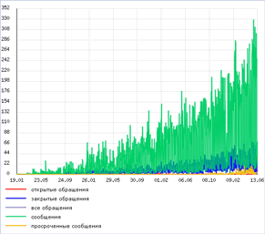
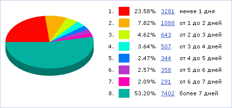
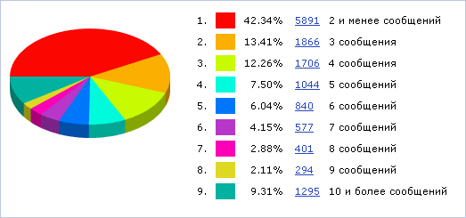

Форма (Сервисы > Техподдержка > Графики) отображает график нагрузки на техподдержку, а также диаграммы, иллюстрирующие качество работы службы техподдержки.
Используется для задания параметров отбора элементов для построения графиков. С его помощью можно сузить количество информации, отображаемых на графиках.
| Наименование параметра | Описание |
|---|---|
| Период | Обозначает, данные за какой период времени следует использовать для построения графиков. Для задания временного диапазона можно использовать либо список с количеством дней, либо поля-календари. |
| Сайты | Сайты, данные по которым будут отображаться на графиках. |
| Ответственный | Поле, позволяющее построить графики только для определённых сотрудников. Использование этого поля требует прав прав администратора техподдержки.
Можно воспользоваться специальными логическими выражениями. Синтаксис выражений можно узнать, если кликнуть символ ? рядом с полем. |
| Уровень поддержки | Уровень поддержки выводимых обращений. |
| Категория | Требуемая категория выводимых обращений. |
| Критичность | Критичность выводимых обращений. |
| Статус | Статус выводимых обращений. |
| Оценка ответа | Оценка ответа обращений, которые следует отобразить. |
| Источник | Источник требуемых обращений. |
| Что показать на графике | Указать, какие из графиков показывать:
|
Чтобы отфильтровать отчеты по заданным критериям поиска, нажмите кнопку Найти. Для отображения полных отчетов нажмите кнопку Отменить.
График отображает количество обращений и сообщений в системе техподдержки по дням. График отражает загрузку службы техподдержки на конкретную дату и может использоваться для принятия управленческих решений по функционированию службы техподдержки..
Нажмите на рисунок, чтобы увеличить
Эта круговая диаграмма наглядно показывает типичное количество времени (в днях), которое тратится на решение проблем службой техподдержки.

На данной диаграмме представлено процентное соотношение количеств сообщений в закрытых обращениях.

| © «Битрикс», 2001-2008, «1C-Битрикс», 2008 | 1С-Битрикс: Управление сайтом |